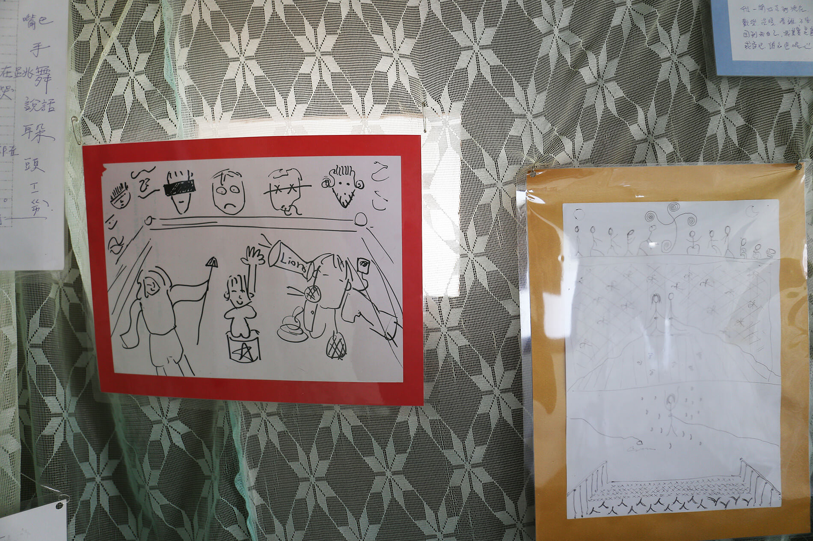
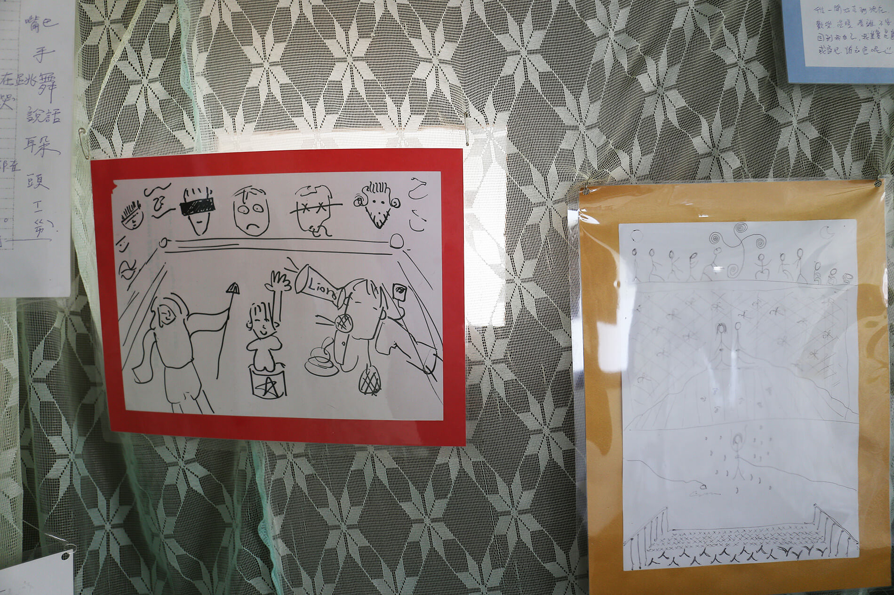
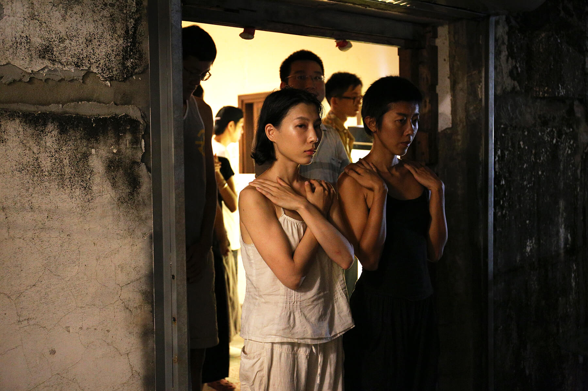
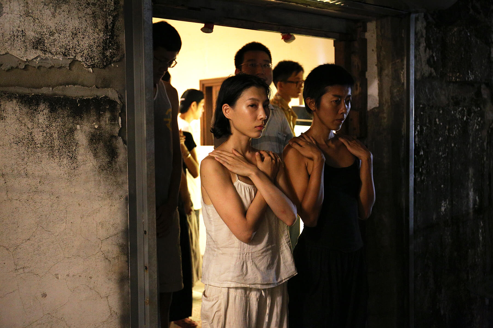
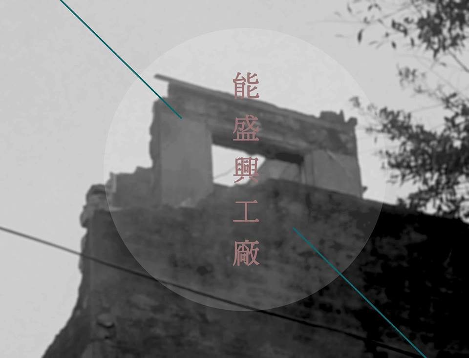
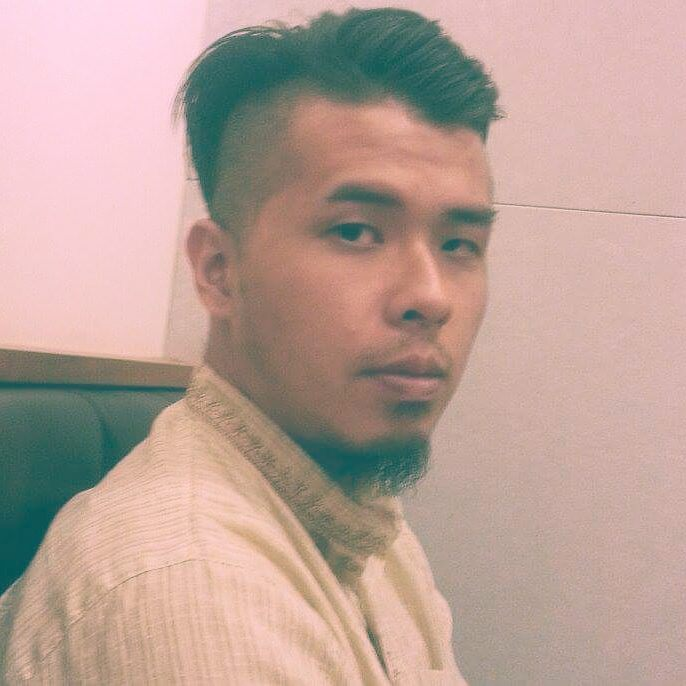

Parousia: The Advent of N-Factory
Artist│Kao Yu-I, Kaya Hanasaki, N-factory
Curator│Chiu Po-Ting, Showzoo Tsai
Term│10/09 ～11/06
Opening│02:00 pm 10/09
Venue│Japanese Room, Neng Sheng Xing Factory
FB：https://www.facebook.com/events/1774110236191095/
Divine, improvise
and whisper, and beware
not to speak out loud.
────── Adonis, To a Soothsayer
Our yesterday appears here today, the day before tomorrow.
Today, we’re facing the situation that democracy has been gradually contracted by the government, conforms itself with capitalists and their lobbyists: profiting the few and causing economic disparity. Under this very condition, it seems that the public will be trapped in eschatological melancholy because they no longer have sufficient space making decisions. Some had decided to explore alternatives than staying under the dominance of neo-liberal. People first encounter Neng Sheng Xing Factory as an experimental, collective wonder life. If they linger and expand their minds, they will discover the value of solidarity. Soon enough, a figure of alternative everyday life starts to approach: A piece of land where people can live and work together. Like the apostles passing creeds, members of N-factory keep reminding others to pay more attention to various apocalyptic disasters: ecological crisis, biogenesis, economic inequalities, social divisions and more.
The most abused rhetoric in various publicity in Taiwan nowdays would be ___ is coming! If people unconditionally accept these “international” symbolic icons, we lost opportunity once more, to greet our own subjectivities. On the other hand, members of Neng Sheng Xing Factory built their facilities from scratch and made the space one of the cultural hubs in Tainan. Although N-factory has become a composite space, but members are yet to acquired ability to address themselves methodically. Thus, the impression would be more or less biased for others to gain if they are not one of the crew.
Accumulating archives, texts, and commentaries of oneself, is to enter a certain category or to say a symbolic world, which people can interchange thoughts, memories, and reflections anytime, anywhere. First-hand references will soonly be formed into various texts and what once condensed will contain the potential of being dissolved again, into everyday life. It doesn’t matter that N-factory would become either orthodox or heresy, center or margin. Culture will spread in a more efficient way by our prolific productions of our subjectivities such as displaying artworks(memorials) and issuing research works(documents). Here we declare that a brand new way of communicating has already liberated and empowered.
Artists

│Kao Yu-I
Born in Tainan, member of Neng Sheng Xing Family. She live her life earnestly and chearish everybody for having them around N-Factory.
 

This piece of work was the image i had when i was working as a figure model : as a figure model, when i am being objectified, i can speak for myself,but the big nature has no language, it silently excepts. this era is aging fast, sometimes we forgot to breathe, these landscape passes by us, like screens with no live, one by one silently floats by. But the big nature won't forget, its always reminding, and these memories flow in cycle, flows to me and you.
（the works is made from the marine debris collected by the sea）

│Kaya Hanasaki
Born in 1987. M.F.A. Tokyo National University of Arts, Inter-Media course in 2012. The artist mainly works on performance art. The works are for ease the sense of values established by living environment and a social system.
 

“Perspectives of Individual”
-Statement by Kaya Hanasaki
Contrary to the intentions of artist or curator, audience is sharing artwork within their own perspective. However, those perspectives are lurking in the shadows of the concept or critic, which is dictated by specialists. The performance “Perspectives of Individual” invites the audience to participate to share their own perspective by writing or drawing about the experience of performance. The visitor of the exhibition can see the record of performance video and feedbacks from participants.
<< First Act: What are we looking for? >>
Kao,Yui (Main member of N-factory, Artist) and I performed at one of the rooftop of N-factory in the First Act of this performance. I use the Taiwan traditional mosquito net as metaphor of “Society”, which I sleep inside every night in term of A.I.R.. The performance abstractly shows the image of getting away from “Society”, using the mosquito net as invincible division of social frame. This image is inspired by their basic attitudes in organizing the N-factory activities, such as organic farmers market, no nuke demonstration and LGBT pride. These activities show that they have different values and perspectives toward the society nowadays, and trying to create better society in their daily life to activities, and involving others. Kao, Yui is one of them, who walk out of the one setting of society and creating the new with her families. I was kind of drug out from the mosquito net in the end of the performance by the connection of the rope, which was tagged to our stomach during the performance. This rope reminds me of “Umbilical Cord”. One of the most important key word of N-factory is “Family” and the uniqueness of their definition of the family is not related to the actual blood connection, but to share the basic life activities such as eating, clothing, housing and working. In addition to that, there are heartwarming connections, which is difficult to describe or to be seen. But I believe this “warmhearted - familiarity - affection” is the key of creating the new society, which is luck in this modern society. However, this theme is not clearly showed in performance, because the aim of performance this time was to let people to imagine and create their perspectives, but not to show single narrative or the concept. My intention is to share my creating inspiration from the N-factory for those who show their own perspectives for this work.
<< Second Act: No sights, No audience >>
Amazing points of MONO-HA (Most active in late 60’s to mid 70’s in Japan) Artists and movement is flipping the perception between the “Artist as Subject” and “Artwork as Object” to “Artwork (Object-MONO) as Subject”. Not just in artwork, but these perceptions and relationships between the performance artist and participants been changed by some artist like Tino Segal (One of the most known performance artist nowadays). He creates the unique setting works called "constructed situations", which he invites people including the non-official performers to perform without him in the space. Performance artists often been seen as subject to create the performance and expected to perform or to become the leader in the space, but the second act of “Perspectives of Individual” also let participants to be the subject of the performance. The audience transformed into performer directly within minimum given instruction: to close eyes and expire the space with making noise. So, there are conflicts between the first act and second act about how the participant participates into these two performances. The sight information is the largest elements to experience and they are set up as audience in first act, but second act made them use the other sensibility to experience the performance within their own decision-making and actions as performer. These experiments are quit thrilling like wander off into microcosms of society.

│Neng Sheng Xing Factory (N-Factory)
Establish in 2013, from a dinner table where everyone dine together, members of Neng Sheng Xing Factory gradually form themselves a commune and a quasi family. 26 year-old on average, these subjects focus on nature environments, promoting their ideas by organizing various social movements in form of parade, exhibitions, forums, etc. These people are making progress urging articles that considered more just to be passed regarding eco-friendly, no fertilizer farming and LGBT rights.


WORKS：Documentary of N-factory
Curators

║Showzoo Tsai║
Who is she? No fixed characterization does justice. She once said she is a mirror, whoever accepts to look into this mirror should be wary, for certain of their subtly hidden characteristics would be in the reflection and thus replace the previous identity. As the falling rain is hard to pinpoint, so is Showzoo Tsai’s very existence. Uncapturable to the naked eye. Please take a detour or hide when you see her coming.

║Chiu Po-Ting║
An anthropological emissary sent from Taipei, the kingdom of privilege and mild-tempered, socially-acceptable superiority complexes, to observe, negotiate and hopefully survive the intricate web of unwritten social rules and fiery relations in the deep, dangerous south of Taiwan. Running an artist daycare center, holding several orgies of trans-disciplinarity. Prefers a combination of anthropology and psychoanalysis. A bloodthirsty carnivore, will die if he doesn’t consume meat, ambitious.